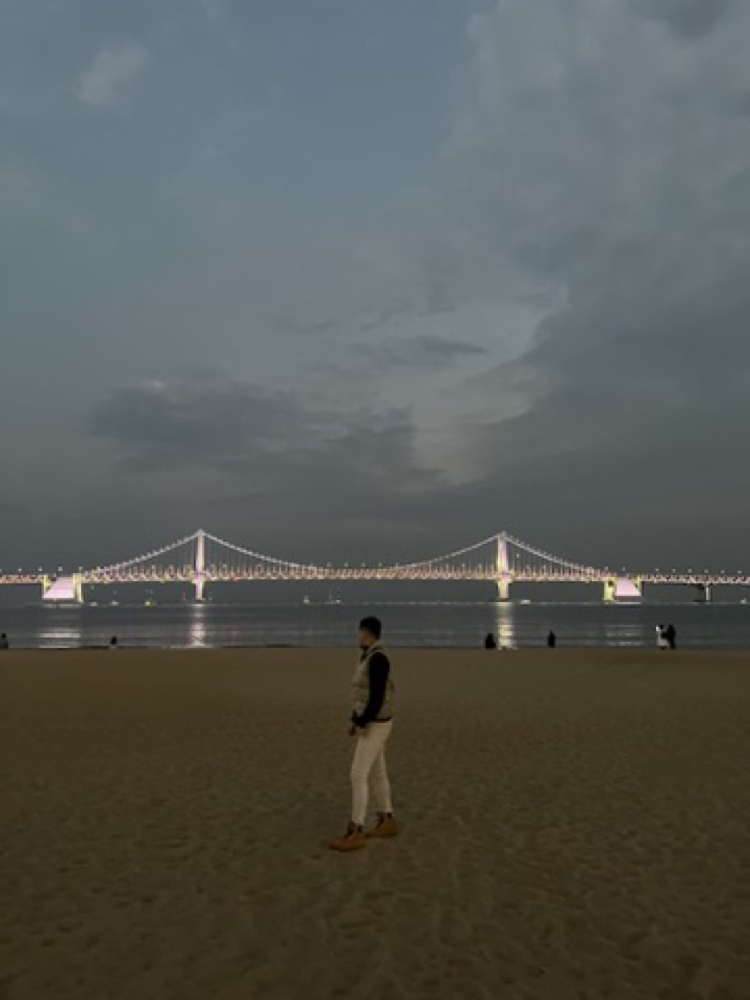
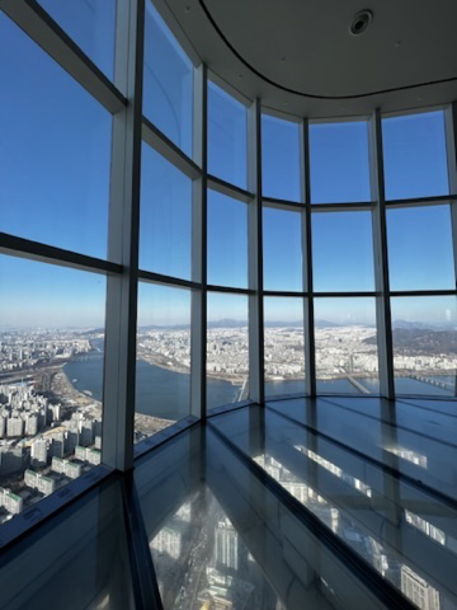

Seoul, Busan, and a Gyeonggi day out
We landed in Seoul, moved south for the fuller Busan stretch, then came back north for hanok streets, cafe pauses, one colder day outside the city, and a skyline-heavy finish.
South Korea / 8-19 Dec 2022
This Korea trip felt balanced in a way I still like: Seoul gave the route structure, Busan added color and coastline, and the food stayed comforting the whole way through. It was cold, easy to photograph, and full of places that felt different without ever feeling difficult to enjoy.
We landed in Seoul, moved south for the fuller Busan stretch, then came back north for hanok streets, cafe pauses, one colder day outside the city, and a skyline-heavy finish.
This one leans less on checklist tourism and more on movement, street texture, warm meals, coastal pauses, and small corners that made the route feel personal.
The water was dark, the bridge lights were simple, and the whole city felt calmer than I expected from a coastal stop that size.
Korean winter food worked exactly how it should: hot, filling, and even more satisfying after a long outside day.
The older corners of Seoul gave the trip a softer rhythm between the modern buildings and the bigger skyline views.
The last Seoul skyline stop made the trip feel complete: dense, bright, and much larger than the city ever felt from street level.
Original Itinerary
The first day was mostly logistics, but it set the overall pace: smooth arrival, clear structure, then move quickly into the real route.
Busan had the fullest sightseeing rhythm in the planner and gave the trip its brightest contrast against the winter cold.
Coming back to Seoul shifted the trip away from the coast and into a more mixed city rhythm with culture, shopping, and easier walking days.
The end of the trip pulled together all the bigger Seoul visuals: tower views, dense shopping streets, and a very clear last-day energy.
City Chapters

01 / 9-12 Dec / Coastal chapterCoastal rail views, seawater grey skies, Gamcheon slopes, pork soup, street snacks, and one very easy cafe stop.
Start Busan chapter
02 / 8 Dec + 13-19 Dec / City bookendsWide roads, hanok courtyards, cafe pauses, one winter day beyond the city, Korean barbecue, and a skyline-heavy final stretch.
Start Seoul chapter